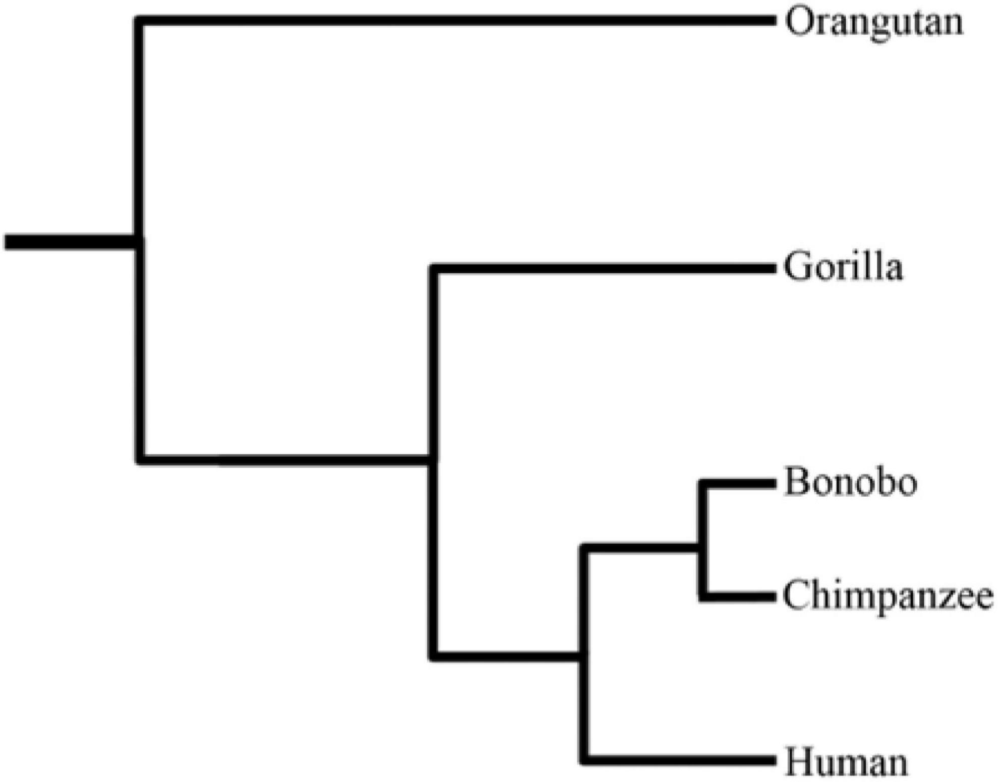
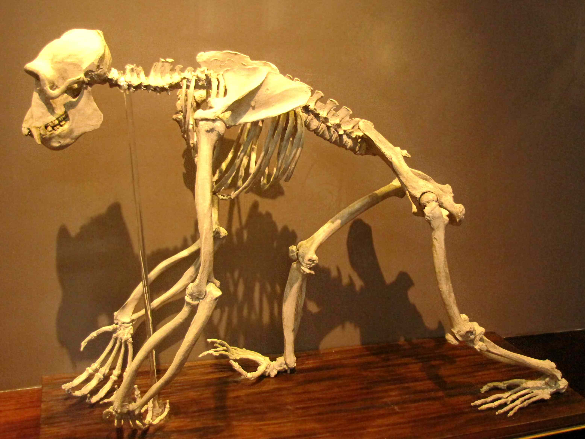
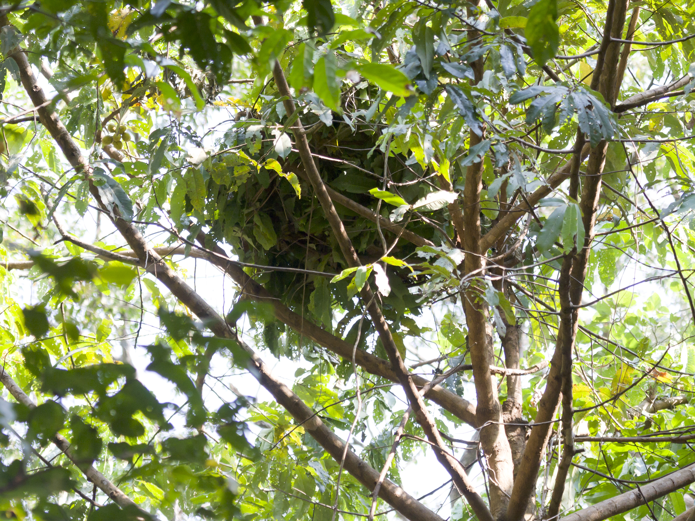
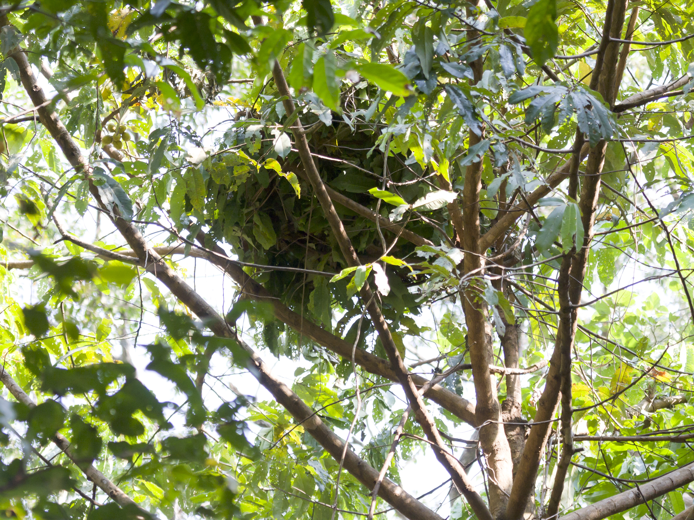
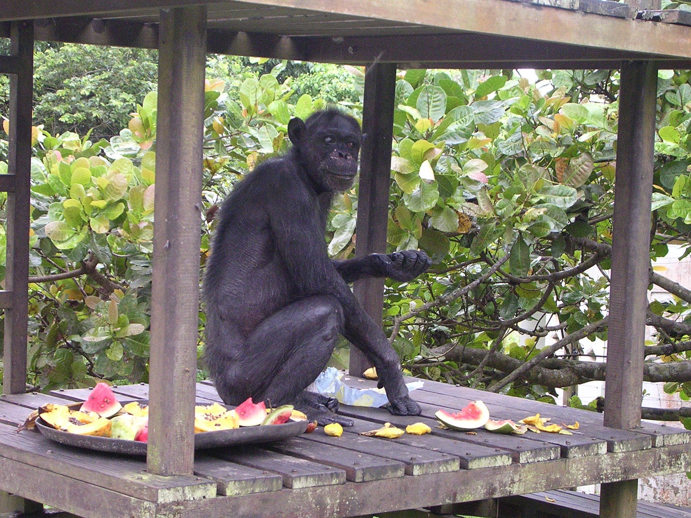
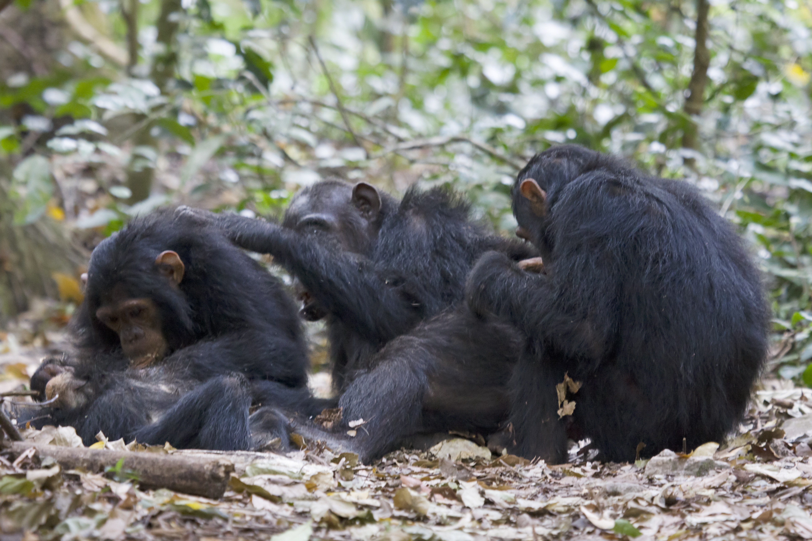
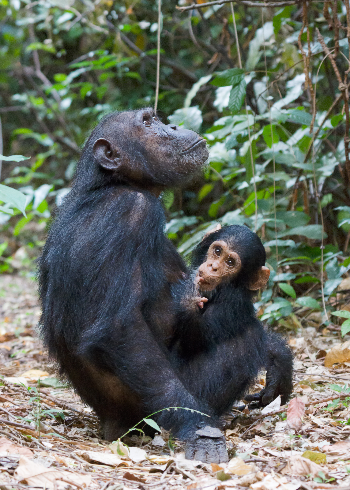
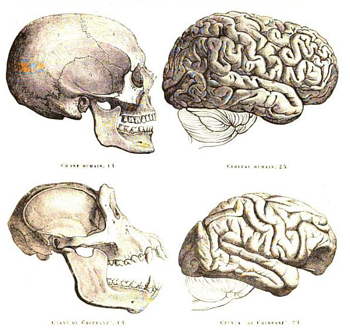

Chimpanzee
The chimpanzee (Pan troglodytes), also known as simply the chimp, is a species of great ape native to the forest and savannah of tropical Africa. It has four confirmed subspecies and a fifth proposed subspecies. When its close relative the bonobo was more commonly known as the pygmy chimpanzee, this species was often called the common chimpanzee or the robust chimpanzee. The chimpanzee and the bonobo are the only species in the genus Pan. Evidence from fossils and DNA sequencing shows that Pan is a sister taxon to the human lineage and is humans' closest living relative. The chimpanzee is covered in coarse black hair, but has a bare face, fingers, toes, palms of the hands, and soles of the feet. It is larger and more robust than the bonobo, weighing 40–70 kg (88–154 lb) for males and 27–50 kg (60–110 lb) for females and standing 120 to 150 cm (3 ft 11 in to 4 ft 11 in).

The chimpanzee lives in groups that range in size from 15 to 150 members, although individuals travel and forage in much smaller groups during the day. The species lives in a strict male-dominated hierarchy, where disputes are generally settled without the need for violence. Nearly all chimpanzee populations have been recorded using tools, modifying sticks, rocks, grass and leaves and using them for hunting and acquiring honey, termites, ants, nuts and water. The species has also been found creating sharpened sticks to spear small mammals. Its gestation period is eight months. The infant is weaned at about three years old but usually maintains a close relationship with its mother for several years more.
The chimpanzee is listed on the IUCN Red List as an endangered species. Between 170,000 and 300,000 individuals are estimated across its range. The biggest threats to the chimpanzee are habitat loss, poaching, and disease. Chimpanzees appear in Western popular culture as stereotyped clown-figures and have featured in entertainments such as chimpanzees' tea parties, circus acts and stage shows. They are sometimes kept as pets, though their strength, aggressiveness, and unpredictability makes them dangerous in this role. Some hundreds have been kept in laboratories for research, especially in America. Many attempts have been made to teach languages such as American Sign Language to chimpanzees, with limited success.
Etymology
The English word chimpanzee is first recorded in 1738. It is derived from Vili ci-mpenze or Tshiluba language chimpenze, with a meaning of "ape". The colloquialism "chimp" was most likely coined some time in the late 1870s. The genus name Pan derives from the Greek god, while the specific name troglodytes was taken from the Troglodytae, a mythical race of cave-dwellers.
Taxonomy and genetics
The first great ape known to Western science in the 17th century was the "orang-outang" (genus Pongo), the local Malay name being recorded in Java by the Dutch physician Jacobus Bontius. In 1641, the Dutch anatomist Nicolaes Tulp applied the name to a chimpanzee or bonobo brought to the Netherlands from Angola.[11] Another Dutch anatomist, Peter Camper, dissected specimens from Central Africa and Southeast Asia in the 1770s, noting the differences between the African and Asian apes. The German naturalist Johann Friedrich Blumenbach classified the chimpanzee as Simia troglodytes by 1775. Another German naturalist, Lorenz Oken, coined the genus Pan in 1816. The bonobo was recognised as distinct from the chimpanzee by 1933.
Evolution
Despite a large number of Homo fossil finds, Pan fossils were not described until 2005. Existing chimpanzee populations in West and Central Africa do not overlap with the major human fossil sites in East Africa, but chimpanzee fossils have now been reported from Kenya. This indicates that both humans and members of the Pan clade were present in the East African Rift Valley during the Middle Pleistocene.
DNA evidence suggests the bonobo and chimpanzee species separated from each other less than one million years ago (similar in relation between Homo sapiens and Neanderthals).[16][17] A 2017 genetic study suggests ancient gene flow (introgression) between 200 and 550 thousand years ago from the bonobo into the ancestors of central and eastern chimpanzees.[18] The chimpanzee line split from the last common ancestor of the human line around six million years ago. Because no species other than Homo sapiens has survived from the human line of that branching, both chimpanzee species are the closest living relatives of humans; the lineage of humans and chimpanzees diverged from gorillas (genus Gorilla) about seven million years ago. A 2003 study argues the chimpanzee should be included in the human branch as Homo troglodytes and notes "experts say many scientists are likely to resist the reclassification, especially in the emotionally-charged and often disputed field of anthropology"
Genome
A draft version of the chimpanzee genome was published in 2005 and encodes 18,759 proteins, (compared to 20,383 in the human proteome). The DNA sequences of humans and chimpanzees are very similar and the difference in protein number mostly arises from incomplete sequences in the chimp genome. Both species differ by about 35 million single-nucleotide changes, five million insertion/deletion events and various chromosomal rearrangements. Typical human and chimpanzee protein homologs differ in an average of only two amino acids. About 30% of all human proteins are identical in sequence to the corresponding chimpanzee protein. Duplications of small parts of chromosomes have been the major source of differences between human and chimpanzee genetic material; about 2.7% of the corresponding modern genomes represent differences, produced by gene duplications or deletions, since humans and chimpanzees diverged from their common evolutionary ancestor.
Characteristics
Adult chimpanzees have an average standing height of 150 cm (4 ft 11 in). Wild adult males weigh between 40 and 70 kg (88 and 154 lb) with females weighing between 27 and 50 kg (60 and 110 lb).[37] In exceptional cases, certain individuals may considerably exceed these measurements, standing over 168 cm (5 ft 6 in) on two legs and weighing up to 136 kg (300 lb) in captivity.
The chimpanzee is more robustly built than the bonobo but less than the gorilla. The arms of a chimpanzee are longer than its legs and can reach below the knees. The hands have long fingers with short thumbs and flat fingernails. The feet are adapted for grasping, and the big toe is opposable. The pelvis is long with an extended ilium. A chimpanzee's head is rounded with a prominent and prognathous face and a pronounced brow ridge. It has forward-facing eyes, a small nose, rounded non-lobed ears, a long mobile upper lip. Additionally, adult males have sharp canine teeth. Chimpanzees lack the prominent sagittal crest and associated head and neck musculature of gorillas.
Chimpanzee bodies are covered by coarse hair, except for the face, fingers, toes, palms of the hands, and soles of the feet. Chimpanzees lose more hair as they age and develop bald spots. The hair of a chimpanzee is typically black but can be brown or ginger. As they get older, white or grey patches may appear, particularly on the chin and lower region. The skin may range from pale to dark, though females develop swelling pink skin when in oestrus.
Chimpanzees are adapted for both arboreal and terrestrial locomotion. Arboreal locomotion consists of vertical climbing and brachiation. On the ground, chimpanzees move both quadrupedally and bipedally. These movements appear to have similar energy costs. As with bonobos and gorillas, chimpanzees move quadrupedally by knuckle-walking, which probably evolved independently in Pan and Gorilla.[44] The physical strength of chimps is around 1.5 times greater than humans due to higher content of fast twitch muscle fibres, one of the chimpanzee's adaptations for climbing and swinging. According to Japan's Asahiyama Zoo, the grip strength of an adult chimpanzee is estimated to be 200 kg (441 lb), while other sources claim figures of up to 330 kg (727 lb).
Ecology
The chimpanzee is a highly adaptable species. It lives in a variety of habitats, including dry savanna, evergreen rainforest, montane forest, swamp forest, and dry woodland-savanna mosaic. In Gombe, the chimpanzee mostly uses semideciduous and evergreen forest as well as open woodland. At Bossou, the chimpanzee inhabits multistage secondary deciduous forest, which has grown after shifting cultivation, as well as primary forest and grassland. At Taï, it is found in the last remaining tropical rain forest in Ivory Coast. The chimpanzee has an advanced cognitive map of its home range and can repeatedly find food. The chimpanzee builds a sleeping nest in a tree in a different location each night, never using the same nest more than once. Chimpanzees sleep alone in separate nests except for infants or juvenile chimpanzees, which sleep with their mothers.
Diet
The chimpanzee is an omnivorous frugivore. It prefers fruit above all other food items but also eats leaves, leaf buds, seeds, blossoms, stems, pith, bark, and resin. A study in Budongo Forest, Uganda found that 64.5% of their feeding time concentrated on fruits (84.6% of which being ripe), particularly those from two species of Ficus, Maesopsis eminii, and Celtis durandii. In addition, 19% of feeding time was spent on arboreal leaves, mostly Broussonetia papyrifera and Celtis mildbraedii.[58] While the chimpanzee is mostly herbivorous, it does eat honey, soil, insects, birds and their eggs, and small to medium-sized mammals, including other primates. Insect species consumed include the weaver ant Oecophylla longinoda, Macrotermes termites, and honey bees. The red colobus ranks at the top of preferred mammal prey. Other mammalian prey include red-tailed monkeys, infant and juvenile yellow baboons, bush babies, blue duikers, bushbucks, and common warthogs.
 

Despite the fact that chimpanzees are known to hunt and to collect both insects and other invertebrates, such food actually makes up a very small portion of their diet, from as little as 2% yearly to as much as 65 grams of animal flesh per day for each adult chimpanzee in peak hunting seasons. This also varies from troop to troop and year to year. However, in all cases, the majority of their diet consists of fruits, leaves, roots, and other plant matter. Female chimpanzees appear to consume much less animal flesh than males, according to several studies. Jane Goodall documented many occasions within Gombe Stream National Park of chimpanzees and western red colobus monkeys ignoring each other despite close proximity.
Chimpanzees do not appear to directly compete with gorillas in areas where they overlap. When fruit is abundant, gorilla and chimpanzee diets converge, but when fruit is scarce gorillas resort to vegetation. The two apes may also feed on different species, whether fruit or insects. Chimpanzees and gorillas usually ignore or avoid each other when feeding on the same tree, but coalitions of chimpanzees have been observed attacking families of gorillas including silverbacks and killing infants.
Mortality and health
The average lifespan of a chimpanzee in the wild is relatively short, usually less than 15 years, although individuals that reach 12 years may live an additional 15 years. On rare occasions, wild chimpanzees may live nearly 60 years. Captive chimpanzees tend to live longer than most wild ones, with median lifespans of 31.7 years for males and 38.7 years for females. The oldest known male captive chimpanzee to have been documented lived to 66 years, and the oldest female, Little Mama, was over 70 years old.
Leopards prey on chimpanzees in some areas. It is possible that much of the mortality caused by leopards can be attributed to individuals that have specialised in chimp-killing. Chimpanzees may react to a leopard's presence with loud vocalising, branch shaking, and throwing objects. There is at least one record of chimpanzees killing a leopard cub after mobbing it and its mother in their den. Four chimpanzees could have fallen prey to lions at Mahale Mountains National Park. Although no other instances of lion predation on chimpanzees have been recorded, lions likely do kill chimpanzees occasionally, and the larger group sizes of savanna chimpanzees may have developed as a response to threats from these big cats. Chimpanzees may react to lions by fleeing up trees, vocalising, or hiding in silence.
Chimpanzees and humans share only 50% of their parasite and microbe species. This is due to the differences in environmental and dietary adaptations; human internal parasite species overlap more with omnivorous, savanna-dwelling baboons. The chimpanzee is host to the louse species Pediculus schaeffi, a close relative of P. humanus, which infests human head and body hair. By contrast, the human pubic louse Pthirus pubis is closely related to Pthirus gorillae, which infests gorillas. A 2017 study of gastrointestinal parasites of wild chimpanzees in degraded forest in Uganda found nine species of protozoa, five nematodes, one cestode, and one trematode. The most prevalent species was the protozoan Troglodytella abrassarti.
Behaviour
Recent studies have suggested that human observers influence chimpanzee behaviour. One suggestion is that drones, camera traps, and remote microphones should be used to record and monitor chimpanzees rather than direct human observation.
Group structure
Chimpanzees live in communities that typically range from around 20 to more than 150 members but spend most of their time traveling in small, temporary groups consisting of a few individuals. These groups may consist of any combination of age and sexes. Both males and females sometimes travel alone. This fission-fusion society may include groups of four types: all-male, adult females and offspring, adults of both sexes, or one female and her offspring. These smaller groups emerge in a variety of types, for a variety of purposes. For example, an all-male troop may be organised to hunt for meat, while a group consisting of lactating females serves to act as a "nursery group" for the young.
At the core of social structures are males, which patrol the territory, protect group members, and search for food. Males remain in their natal communities, while females generally emigrate at adolescence. Males in a community are more likely to be related to one another than females are to each other. Among males, there is generally a dominance hierarchy, and males are dominant over females.[82] However, this unusual fission-fusion social structure, "in which portions of the parent group may on a regular basis separate from and then rejoin the rest," is highly variable in terms of which particular individual chimpanzees congregate at a given time. This is caused mainly by the large measure of individual autonomy that individuals have within their fission-fusion social groups. As a result, individual chimpanzees often forage for food alone, or in smaller groups, as opposed to the much larger "parent" group, which encompasses all the chimpanzees which regularly come into contact with each other and congregate into parties in a particular area.
Male chimpanzees exist in a linear dominance hierarchy. Top-ranking males tend to be aggressive even during dominance stability.[84] This is probably due to the chimpanzee's fission-fusion society, with male chimpanzees leaving groups and returning after extended periods of time. With this, a dominant male is unsure if any "political maneuvering" has occurred in his absence and must re-establish his dominance. Thus, a large amount of aggression occurs within five to fifteen minutes after a reunion. During these encounters, displays of aggression are generally preferred over physical attacks.
Males maintain and improve their social ranks by forming coalitions, which have been characterised as "exploitative" and based on an individual's influence in agonistic interactions. Being in a coalition allows males to dominate a third individual when they could not by themselves, as politically apt chimpanzees can exert power over aggressive interactions regardless of their rank. Coalitions can also give an individual male the confidence to challenge a dominant or larger male. The more allies a male has, the better his chance of becoming dominant. However, most changes in hierarchical rank are caused by dyadic interactions. Chimpanzee alliances can be very fickle, and one member may suddenly turn on another if it is to his advantage.
Low-ranking males frequently switch sides in disputes between more dominant individuals. Low-ranking males benefit from an unstable hierarchy and often find increased sexual opportunities if a dispute or conflict occurs. In addition, conflicts between dominant males cause them to focus on each other rather than the lower-ranking males. Social hierarchies among adult females tend to be weaker. Nevertheless, the status of an adult female may be important for her offspring. Females in Taï have also been recorded to form alliances. While chimpanzee social structure is often referred to as patriarchal, it is not entirely unheard of for females to forge coalitions against males. There is also at least one recorded case of females securing a dominant position over males in their respective troop, albeit in a captive environment. Social grooming appears to be important in the formation and maintenance of coalitions. It is more common among adult males than either between adult females or between males and females.
Mating and parenting
Chimpanzees mate throughout the year, although the number of females in oestrus varies seasonally in a group. Female chimpanzees are more likely to come into oestrus when food is readily available. Oestrous females exhibit sexual swellings. Chimpanzees are promiscuous: during oestrus, females mate with several males in their community, while males have large testicles for sperm competition. Other forms of mating also exist. A community's dominant males sometimes restrict reproductive access to females. A male and female can form a consortship and mate outside their community. In addition, females sometimes leave their community and mate with males from neighboring communities.
Copulation is brief, lasting approximately seven seconds. The gestation period is eight months. Care for the young is provided mostly by their mothers. The survival and emotional health of the young is dependent on maternal care. Mothers provide their young with food, warmth, and protection, and teach them certain skills. In addition, a chimpanzee's future rank may be dependent on its mother's status. Newborn chimpanzees are helpless. For example, their grasping reflex is not strong enough to support them for more than a few seconds. For their first 30 days, infants cling to their mother's bellies. Infants are unable to support their own weight for their first two months and need their mothers' support.
When they reach five to six months, infants ride on their mothers' backs. They remain in continual contact for the rest of their first year. When they reach two years of age, they are able to move and sit independently and start moving beyond the arms' reach of their mothers. By four to six years, chimpanzees are weaned and infancy ends. The juvenile period for chimpanzees lasts from their sixth to ninth years. Juveniles remain close to their mothers, but interact an increasing amount with other members of their community. Adolescent females move between groups and are supported by their mothers in agonistic encounters. Adolescent males spend time with adult males in social activities like hunting and boundary patrolling. A captive study suggests males can safely immigrate to a new group if accompanied by immigrant females who have an existing relationship with this male. This gives the resident males reproductive advantages with these females, as they are more inclined to remain in the group if their male friend is also accepted.
Intelligence and cognition
Chimpanzees display numerous signs of intelligence, from the ability to remember symbols[115] to cooperation,[116] tool use,[117] and perhaps language.[118] They are among species that have passed the mirror test, suggesting self-awareness.[119] In one study, two young chimpanzees showed retention of mirror self-recognition after one year without access to mirrors.[120] Chimpanzees have been observed to use insects to treat their own wounds and those of others. They catch them and apply them directly to the injury.[121] Chimpanzees also display signs of culture among groups, with the learning and transmission of variations in grooming, tool use and foraging techniques leading to localized traditions.
A 30-year study at Kyoto University's Primate Research Institute has shown that chimpanzees are able to learn to recognise the numbers 1 to 9 and their values. The chimpanzees further show an aptitude for eidetic memory, demonstrated in experiments in which the jumbled digits are flashed onto a computer screen for less than a quarter of a second. One chimpanzee, Ayumu, was able to correctly and quickly point to the positions where they appeared in ascending order. Ayumu performed better than human adults who were given the same test.
In controlled experiments on cooperation, chimpanzees show a basic understanding of cooperation, and recruit the best collaborators. In a group setting with a device that delivered food rewards only to cooperating chimpanzees, cooperation first increased, then, due to competitive behaviour, decreased, before finally increasing to the highest level through punishment and other arbitrage behaviours.
Great apes show laughter-like vocalisations in response to physical contact, such as wrestling, play chasing, or tickling. This is documented in wild and captive chimpanzees. Chimpanzee laughter is not readily recognisable to humans as such, because it is generated by alternating inhalations and exhalations that sound more like breathing and panting. Instances in which nonhuman primates have expressed joy have been reported. Humans and chimpanzees share similar ticklish areas of the body, such as the armpits and belly. The enjoyment of tickling in chimpanzees does not diminish with age.
Chimpanzees have displayed different behaviours in response to a dying or dead group member. When witnessing a sudden death, the other group members act in frenzy, with vocalisations, aggressive displays, and touching of the corpse. In one case chimpanzees cared for a dying elder, then attended and cleaned the corpse. Afterward, they avoided the spot where the elder died and behaved in a more subdued manner. Mothers have been reported to carry around and groom their dead infants for several days. Experimenters now and then witness behaviour that cannot be readily reconciled with chimpanzee intelligence or theory of mind. Wolfgang Köhler, for instance, reported insightful behaviour in chimpanzees, but he likewise often observed that they experienced "special difficulty" in solving simple problems. Researchers also reported that, when faced with a choice between two persons, chimpanzees were just as likely to beg food from a person who could see the begging gesture as from a person who could not, thereby raising the possibility that chimpanzees lack theory of mind
